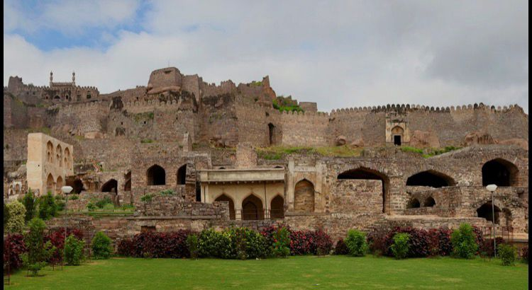
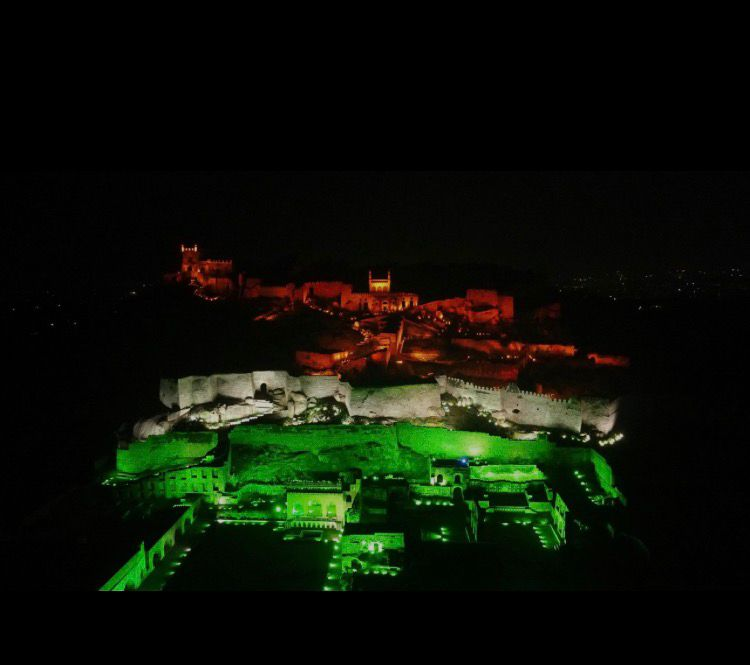

Golconda Fort
Golconda Fort is one of the best-known historical monuments in Hyderabad, Telangana. It was first built in the 13th century by the Kakatiya kings and was later extended by the Qutb Shahi dynasty. The fort is known for its thick walls, sizeable gates, secret passages, and a fascinating sound system - if you stand at the entrance and clap, it can be heard, in clarity, at the top of the fort! Golconda once was a well-known trade center for diamonds, where famous stones, including the Koh-i-Noor, were believed to have been stored. Today visitors flock to the fort to experience its rich history, and participate in the evening light and sound show that retells the fort's glorious past.
 